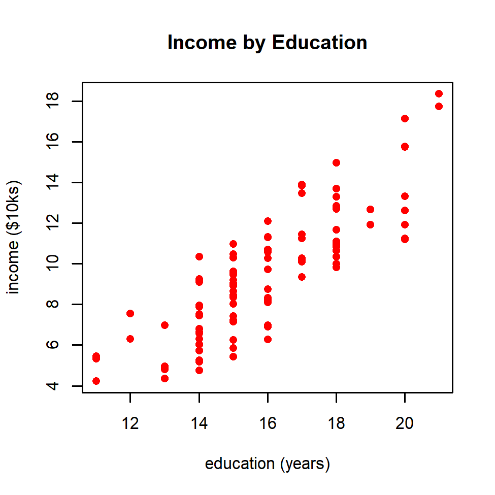
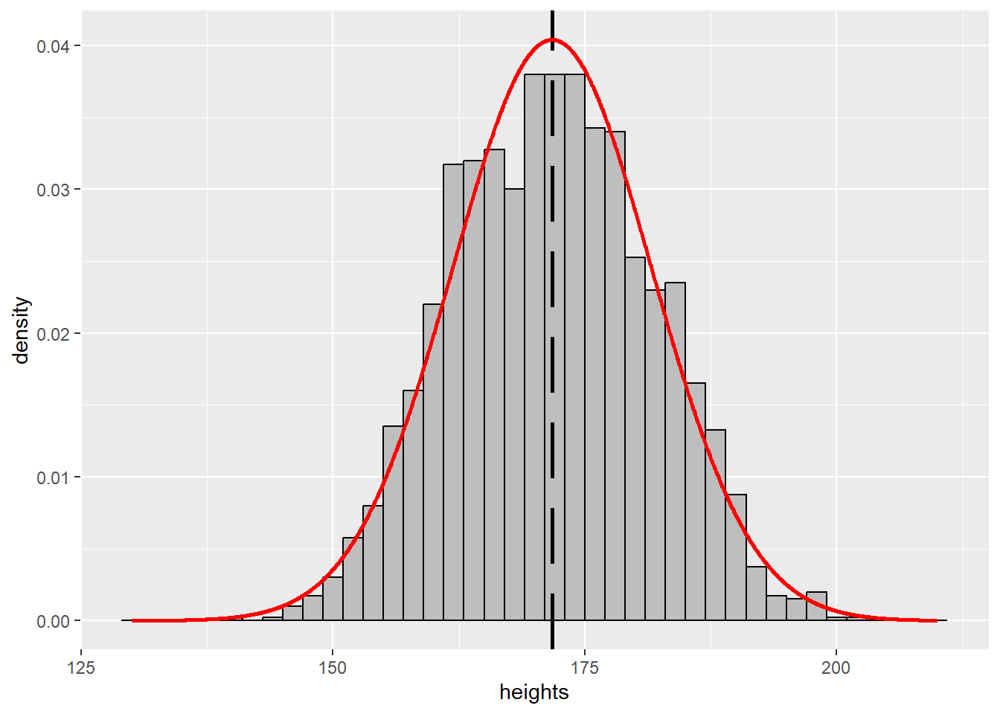
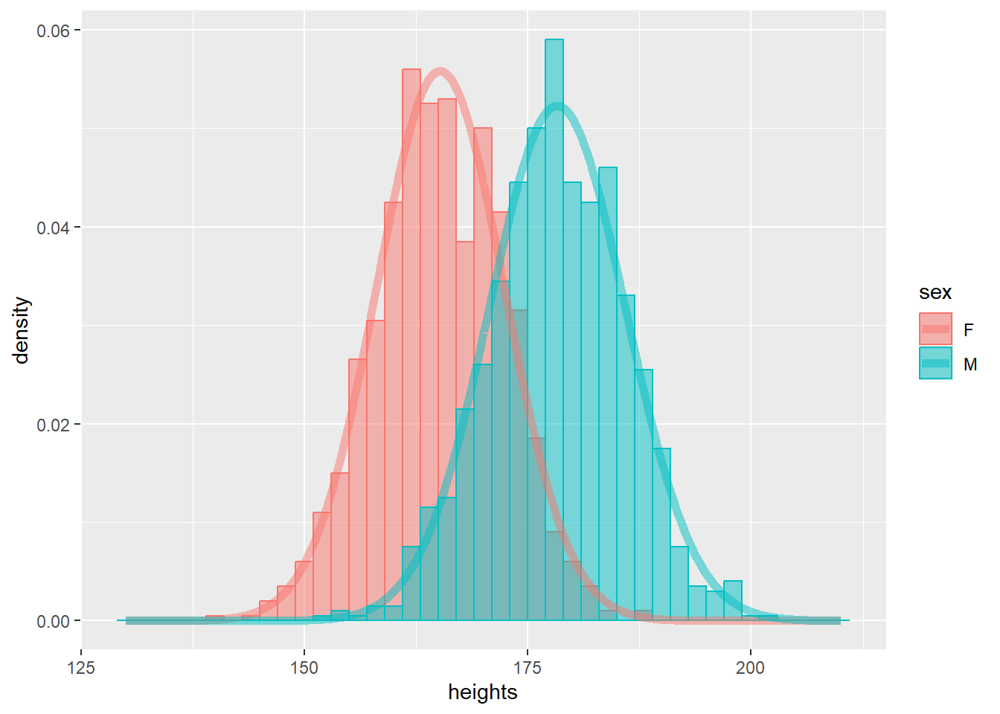

discuss why you might want to take a course like this one and
highlight the topics that we will cover this semester.
2.2 Motivating Questions
Consider the following questions:
How effective is the Pfizer vaccine against the delta variant of COVID-19?
Do early intervention programs (e.g., Head Start) improve educational outcomes for low-income children?
Are record-high temperatures in recent years explainable by chance?
These questions are a little too complicated for an introductory course like this, but they are the kinds of questions that data science is equipped to answer.
Our job as data scientists is to draw on tools from statistics, computer science and mathematics, in collaboration with domain experts, to answer questions like these.
That being said, collecting, cleaning and analyzing data is only part of the job.
The most important skill you will learn in this course is not a statistical or computational tool (though those are important!). It is the abilitity to clearly organize and explain your findings in a way that is appropriate for your intended audience.
2.3 What is data science?
Is “data science” just a rebranding of applied statistics?
Well, perhaps, to an extent. But the emergence of “data science” has coincided with huge changes in how science and statistics gets done.
Computers and the internet have made it easy to collect, share and analyze data in ways that were unimaginable only a decade or two ago.
Several times this semester, we will talk about fundamental parts of the data science toolkit that are usable only because computers are fast and cheap.
This change in technology has changed how we do science. In this sense, “data science” is a culture or a way of thinking, more than it is a field.
2.4 Wearing different hats
Being a good data scientist requires that we be able to draw on many different fields and ways of thinking.
A “well rounded” data scientist should move fluidly among multiple ways of thinking and approaching a problem.
Here are a few of the different kinds of hats I (Keith) find myself wearing in my day-to-day work:
scientist: understanding data domain, developing questions, “story telling”
software dev: data processing and wrangling / reproducibility
mathematician: linear algebra, probability theory, optimization
This hints at why it is so hard to become a truly good data scientist– you need to be pretty good at a lot of different things.
If nothing else, going into this line of work requires that you be ready and willing to be a life-long student There are always new techniques, methods, frameworks and application domains to be learned!
2.5 Topics covered
We will cover five basic topics this semester:
Sampling
Estimation
Testing
Prediction
Observational/exploratory data analysis
Let’s briefly discuss each of these.
2.5.1 Sampling
Election polls and other survey data often get reported with response rates and other details about how survey respondents were selected.
Example: At the end of October 2020, pollsters were trying to predict the outcome of the 2020 presidential election. A common technique for this is “random digit dialing”, which is exactly what it sounds like.
This poll reached 806 registered voters in Wisconsin. After a significant amount of statistical work, the pollsters reported that
48% of likely voters would choose Biden
43% would vote for Trump
2% for Jorgensen, and
7% remained undecided.
In order to reach those 806 participants, many more numbers need to be dialed. In this poll, the response rate was 4.3%. If you read the methodology report, you’ll see that in fact over 100,000 numbers had to be dialed to get these 806 respondents. The vast majority of those 100,000 calls were never picked up. Among those who did pick up, 806 were registered voters and agreed to participate in the survey, but another were 1113 refused to participate (or hung up).
In the actual election,
Biden received 49.45% of votes cast in Wisconsin and
Trump received 48.82%.
Questions:
How does this compare with the predicted vote shares of 48% for Biden and 43% for Trump?
How might we explain the discrepancies?”
2.5.2 Testing
You have no doubt heard that “correlation does not imply causation”. Well, this is true.
Ice cream consumption is correlated with drowning, but we don’t think that ice cream causes drowning.
Hospitals are full of sick people, but we don’t think that hospitals cause sickness.
Nonetheless, to paraphrase a relevant comic, causality often does give awfully strong hints.
There were approximately 30,000 people in the trial, split (approximately) evenly between treatment (got the vaccine) and control (got a placebo).
In total, there were 95 cases of COVID-19 among the participants; 90 among the placebo group and 5 among the treated group.
Of the 95 cases, 11 were severe cases, all in the placebo group.
In this study, vaccination is correlated with reduced risk of infection.
Does this mean that the vaccination causally reduced COVID-19 infection? Why or why not?
How do we know that we aren’t fooling ourselves when we say that the Moderna vaccine is effective?
2.5.3 Estimation
The news is perpetually full of stories about different economic indicators and how they are changing over time.
The Consumer Price Index (CPI) is meant to measure the change over time in prices of consumer goods and services.
Most surveys (e.g., public opinion or election surveys) are reported with a +/- 3% “confidence interval” or “sampling error”.
What is that all about?
Example: In the Wisconsin poll discussed above, the margin of error was reported to be +/- 4.3%.
Recall that the pollsters predicted 48% of likely voters would choose Biden and 43% Trump, while the actual outcome was 49.45% for Biden and 48.82% for Trump.
Is this outcome within the stated margin of error?
More generally, what does it mean to give a confidence interval for a quantity of interest?”
2.5.4 Prediction
Investing successfully (in real estate, stocks, etc) requires that we be able to predict the future behavior of an asset based on what we know about it currently.
Based on the size of a house, its proximity to schools or infrastructure, walkability of its neighborhood, etc., we might hope to predict its “true” price.
Many psychology and sociology studies aim to predict future student outcomes based on performance on a standardized test
In these kinds of problems, our goal is to predict an outcome or response (e.g., house price) based on one or more predictors (e.g., square footage of the house).
Most of machine learning is concerned with prediction problems. For example, labeling an image according to whether or not it contains a cat can be stated as a prediction problem.
Example: this plot shows different people’s incomes (in tens of thousands of dollars per year) as a function of their years of education.

Education by income
It certainly looks like more years of education correlate with higher income.
Question: Suppose I tell you that someone has 18 years of education. What would you predict their income to be?
2.5.5 Observational/exploratory data analysis
Suppose that a colleague or client gives you a data set that looks like this:
What would you do? There is clearly some kind of a cluster structure present here.
The goal of exploratory data analysis is to identify interesting structures in our data that might warrant further study.
Example: In my own research, I (Keith) collaborate a lot with neuroscientists, who are interested in identifying functional subnetworks of the brain. These are groups of neurons that work together, typically because they are associated with the same activity (e.g., attention, motion, speech).
This is an example of clustering, in which our goal is to group data points in a sensible way, without necessarily saying ahead of time what those groups mean
Oftentimes, we obtain observational data. That is, data that does not come from a carefully-designed experiment.
Example: Much data in the modern age of “big data” is collected by scraping the web or collected in other “messy” ways.
Scraping data from a social media site such as Twitter.
Measuring the socioeconomic status of people in different zip codes
There are lots of interesting scientific questions we might like to ask about such a data set, but because this data isn’t the result of a carefully-controlled experiment, we are often much more limited in what we can say.
Unless you subscribe to some rather outlandish philosophical beliefs (see, e.g., here), there is a world out there, which we would like to learn about.
To figure things out about the world, we take measurements. That is to say, we collect data. These data describe the world, but it remains to build a model that explains how these data came to be.
The process of inference is how we use a specific set of data to guide our beliefs about the world.
As a simple example, consider human height. What is the average adult human height?
This is a question about the world. In fact, we could compute the average adult human height exactly if we could go out and measure the height of every adult human.
Of course this would be a complicated and expensive process.
Instead, we could just measure the heights of a few adult humans (say, a few thousand).
Of course, this small collection of humans would need to be chosen randomly and in such a way that they would be representative of the population as a whole, but let’s ignore that concern until later in the course.
The few thousand heights that we measure would constitute our data– measurements that were taken out there in the world.
Here is a simulation of what that data might look like with a sample of size 2000.
# heights.R contains code for generating our synthetic data set.source('r_scripts/heights.R');
The vertical dashed line indicates the mean of these 2000 sampled heights.
Because this is a random sample (and because heights vary due to factors like nutrition and genetics), this sample mean need not be equal to the population mean (i.e., the true average adult human height).
Instead, the heights in our sample (and their mean) will vary randomly about the population average height. We use a statistical model (i.e., probability theory) to describe this variation.
A common choice for modeling random variation like this is the normal distribution (in the coming lectures we will see plenty of other distributions).
We assume that our data are generated by a normal distribution with some mean \(\mu\) (i.e., the average height) and some standard deviation \(\sigma\). We call these parameters of the model.
Estimating the population average height then reduces to estimating the “true” value of the parameter \(\mu\) based on the data.
This step of using our data to determine something about our model is called inference. In this case, our goal is to estimate the value of the model parameter \(\mu\), which will in turn be our estimate of the average adult human height.
2.7 All models are wrong, but some are useful
An important point in our human height example above was our assumption that heights are normally distributed. In practice, modeling assumptions like these are never strictly true.
Our model is just that– a model of the world; a set of simplifying assumptions that we hope are at least a good approximation to the truth.
Think of your physics courses, where we assume that things happen in a frictionless void and use Newtonian mechanics instead of quantum mechanics.
We make assumptions like these because they often make the math easier while still being a good approximation to reality.
In our example above, the normal distribution with mean \(\mu\) and standard deviation \(\sigma\) says that with some (perhaps very small) probability, we might observe a negative number.
If we model human heights as being normally distributed, our model predicts that we should, on occasion, meet people who have negative height.
Why might that be a problem?
Why might it be okay to still use this model anyway?
Let’s push ahead and “fit” a normal to our data. We’ll have lots to say about this later. For now, think of this as choosing, out of all the possible normal distributions, the one that “best agrees”” with our data.
# The dataframe df_normal contains a column of x-values in the same range as our synthetic data.# df_normal$y contains the normal pdf with mean and standard deviation fit to our synthetic data,# evaluated at these x-values.pp <- pp +geom_line( aes(x=df_normal$x, y=df_normal$y), size=1, color='red' );
Warning: Using `size` aesthetic for lines was deprecated in ggplot2 3.4.0.
ℹ Please use `linewidth` instead.
pp

Huh. Our data seems to be a bit “flatter” than the normal distribution would predict.
Perhaps this is just due to random fluctuation, but in fact there is a very simple reason for this: We didn’t tell you about it, but this sample includes both males and females.
Let’s plot the same histogram, but this time, let’s break out the heights according to sex.
Human heights are bimodal– female heights are approximately normal about some mean, and male heights are approximately normal about another.
We can fit a normal to each of these separately and we see that our model agrees with the data much better.
# df_bimodal$x contains x values that agree with the range of our height data.# df_bimodal$density is the density of a normal distribution, fit to the male or female heights,# evaluated at these x-values.# df_bimodal$sex encodes male/female\n",pp <- pp +geom_line(data=df_bimodal, aes(x=x, y=density, color=sex), size=2, alpha=0.5);pp

This is a good (albeit simple) illustration of the kind of iterative workflow that we typically use in data science.
We obtain our data, fit a model to it, and then we examine the shortcomings of that model.
After some thought, it becomes clear how to improve our model.
We implement those changes (in this case, we incorporated the variable sex into our model), and examine our findings again.
Typically, we repeat this cycle several times before reaching a conclusion that we are confident in.